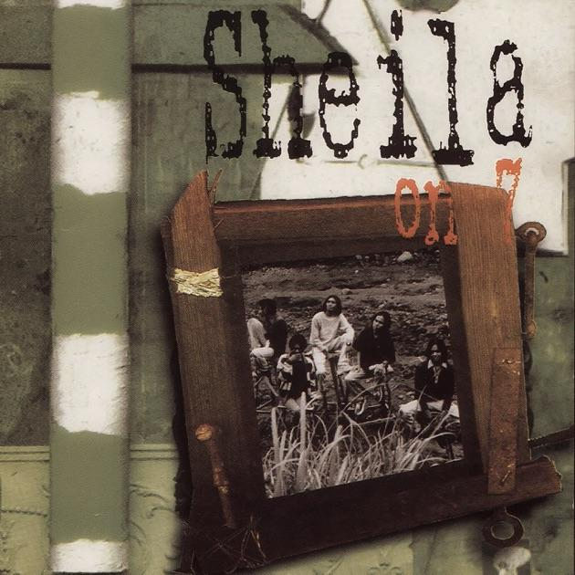
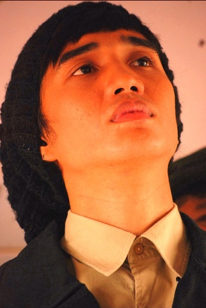
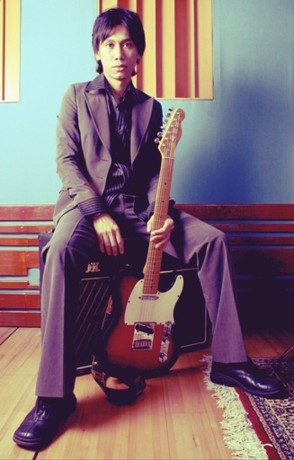
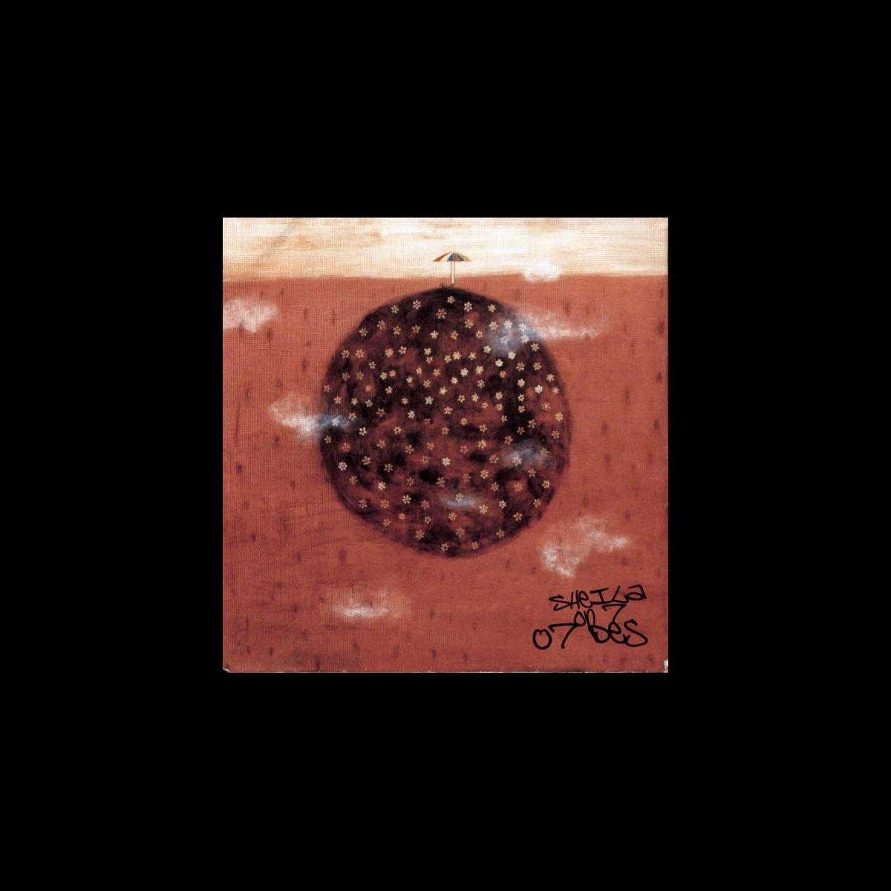
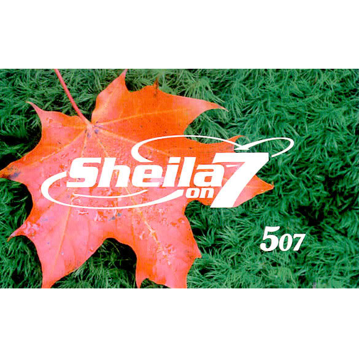
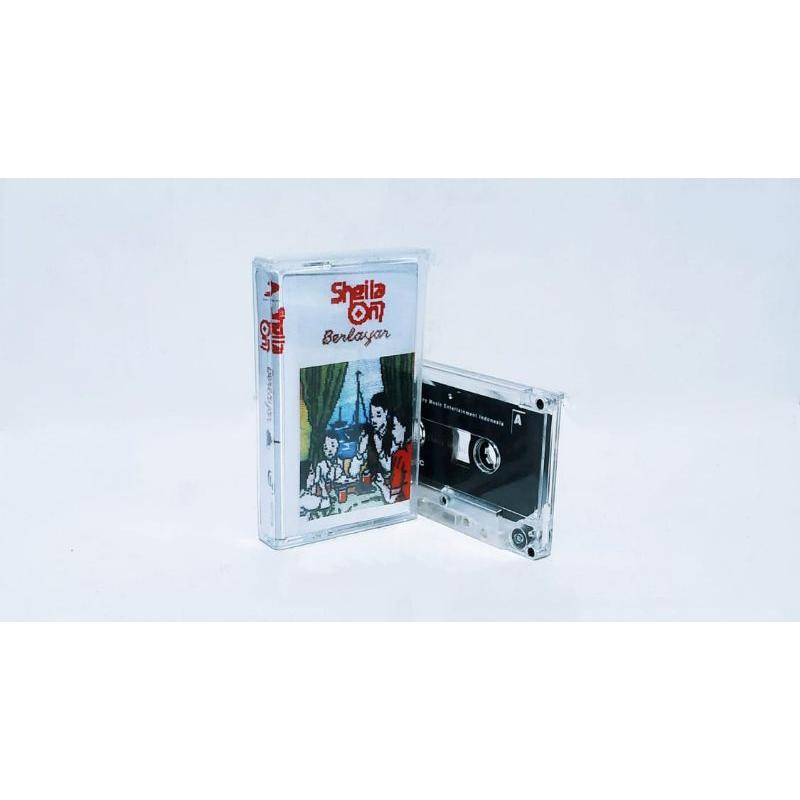
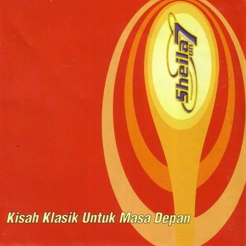
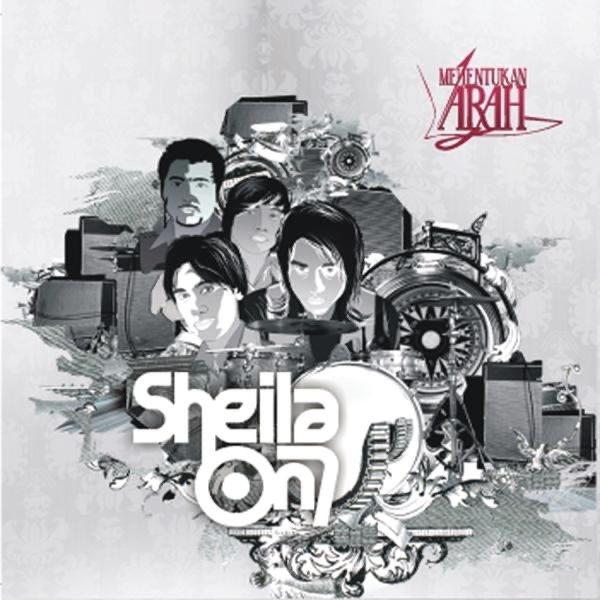
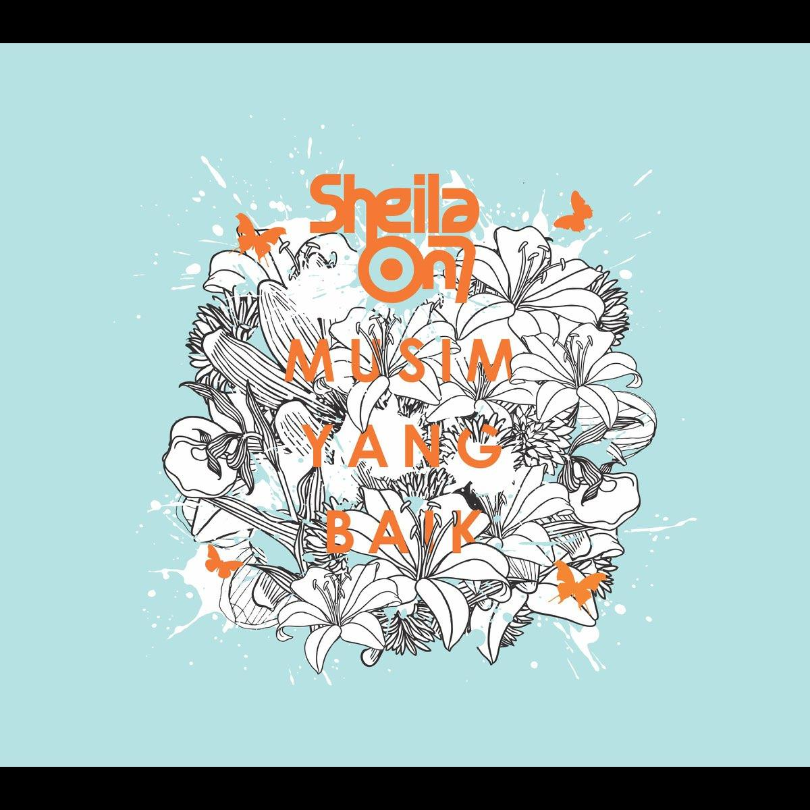
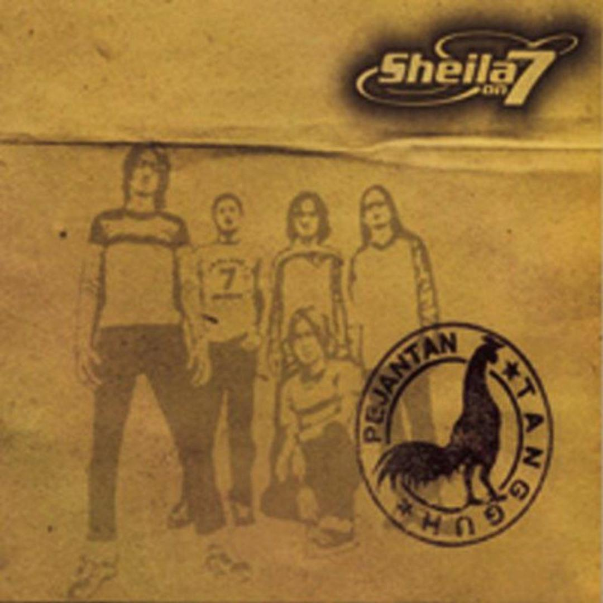

Sheila On 7
Sheila On 7 merupakan grup musik asal Yogyakarta yang terbentuk pada 6 Mei 1996. Band ini dikenal dengan musik bergenre pop rock dan alternative rock yang memiliki ciri khas melodi mudah diingat serta lirik yang dekat dengan kehidupan sehari-hari. Beberapa lagu populernya antara lain Dan, Sephia, Seberapa Pantas, dan Melompat Lebih Tinggi.
Hingga saat ini, Sheila On 7 dikenal melalui tiga personel utamanya, yaitu sebagai vokalis, Eross sebagai gitaris, dan Adam sebagai pemain bass. Dengan karya-karya yang telah menemani berbagai generasi, Sheila On 7 berhasil menjadi salah satu grup musik Indonesia yang tetap dicintai oleh banyak penggemar.
18.6M
Spotify Followers
10.7M
Monthly Listeners
8
Official Full Albums
Discography

07 Des
Listen Now
507
Listen Now
Berlayar
Listen Now
Kisah Klasik Untuk Masa Depan
Listen Now
Menentukan arah
Listen Now
Musim Yang Baik
Listen Now